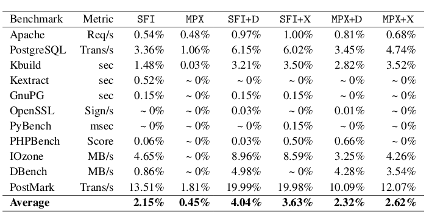
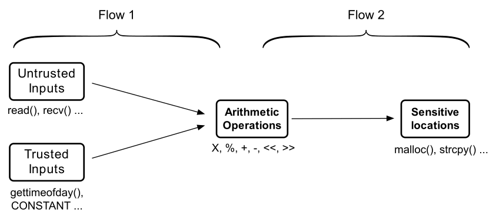
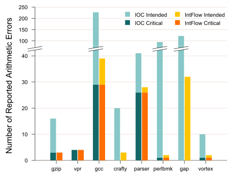

About
I am a Ph.D. student at Computer Science Department of Columbia University. Specifically, I started my Ph.D. program in the fall of 2012 under the supervision of Angelos D. Keromytis and since the end of 2017 I am also co-advised by Roxana Geambasu. During my doctoral studies, I closely collaborate and am primarily advised by Vasileios P. Kemerlis. I hold a M.Phil (2016) and a M.Sc (2014) from Columbia University. In a past life, I studied at the Informatics Department of the Athens University Of Economics and Business and earned my B.Sc. degree in 2011.
I am interested in broad aspects of systems security with a focus on Operating Systems security, software hardening and software testing.
Projects
During my Ph.D. I had the chance to design and develop the following projects:

kR^X
kR^X is a protection system that protects the kernel against code reuse exploits in a self-protection manner. It is based on compiler-assisted code instrumentation and code diversification.
kSplitStack
kSplitStack is a protection systems that prevents attackers from leaking or corrupting kernel code pointers. It relies on static code instrumentation and repurposing hardware features.

IntFlow
IntFlow is a compiler extension that distinguishes real —potentially exploitable— bugs from benign, programmer-intended integer error reports. It employs static information flow tracking.
kR^X
The OS kernel has always been a compelling target for attackers. After the introduction of defenses (e.g., SMEP, SMAP) that prevent the use of exploits based on the ret2usr methodology, attackers were forced to
retrofit techniques originally designed for user space
exploitation, such as Just-In-Time Code Reuse, to read the code section and construct their exploits on the fly therefore bypassing existing kernel
hardening mechanisms.
In kR^X, we propose a novel self-protection defense system based on
compiler-assisted instrumentation mechanisms and code diversification.
Specifically, kR^X first modifies the kernel memory layout to separate the code
and data into two disjoint regions, placing the code on the top of the address
space.

It then utilizes the GCC plugin interface to instrument every memory read with
SFI-inspired range checks that enforce the Execute-Only primitive on the code
section. Due to the large number of memory reads in the kernel code, kR^X makes
sure to perform a series of safe optimizations to minimize both the number of
instruction in every check and the number of checks emitted.
Moreover, on modern Intel CPUs kR^X takes advantage of Intel MPX, to further reduce the runtime overhead of the instrumentation.
The above guarantee that an attacker is unable to read the kernel code section and identify the addresses of gadgets, effectively preventing them from constructing exploits on-the-fly.
Finally, it diversifies the code layout and protects return addresses through
encryption or deception. When performing code diversification, kR^X randomizes on
code block level and function level thus rendering both the internal and the
function layout unpredictable. This is necessary to thwart exploits that employ
gadgets at pre-computed addresses. Regarding return address protection, kR^X either emits a unique and unpredictable per-routine key which is used to XOR-encrypt/decrypt return addresses at function prologue/epilogue, or "hides" the return address among fake (decoy) ones that trigger exceptions when used as part of a code reuse exploits.
kR^X incurs small runtime overhead on real world applications, which ranges from 4.04% on legacy CPUs to 2.32% when MPX is available. The following table reports the runtime overhead of the SFI-inspired instrumentation (SFI), the MPX-based instrumentation (MPX), and the respective instrumentations in addition to the code diversification and return address encryption (SFI+X, MPX+X), and in addition to the code diversification and return address deception (SFI+D, MPX+D).

kR^X was published in EuroSys 2017 and an extended version of it (including how to employ the x86 segmentation unit to enforce the Execute-Only primitive) will be published in TOPS. The code of kR^X is publicly available.
kSplitStack
kSplitStack thwarts the construction of kernel code reuse exploits by "hiding" kernel code pointers. The fundamental concept of kSplitStack is the protected region, a part of the address space that attackers can neither read nor write. kSplitStack then ensures that return addresses are emitted in the protected region in a race-free manner, through the use of code instrumentation (both at compile and assembler level). In addition, it re-purposes the Interrupt Stack Table (IST) hardware feature of the x86-64 architecture to protect code pointers in interrupt context. Specifically, it uses the IST to force the hardware to emit the aforementioned code pointers to the protected region, thus protecting them from leakage or corruption. Finally, to prevent attackers from accessing code pointers through page table manipulation, kSplitStack employs a self-protection mechanism to protect page table entries, based on toggling the CPU write-protection.
kSplitStack is an ongoing work that is going to be submitted for publication soon.
IntFlow
Arithmetic operations that lead to integer errors, such as
integer overflows or signedness conversion, are often an
integral part of exploits. Despite the development of a number
of testing and reporting systems, integer errors are still a
problem. One of the main reasons is that often developers
intentionally use constructs that violate the language standards
for performance or portability reasons. Unfortunately, testing
systems do not take such instances into consideration and flood
the developer with reports of benign integer errors.
In IntFlow, we propose a compiler extension for the LLVM
compiler which differentiates between reports of real bugs that
might be exploitable, and reports of developer-intented
standard violations. This is achieved by distinguishing
critical integer errors: errors whose operands
originate from untrusted sources (e.g., files) or whose result
propagates to a sensitive program location (e.g.,
malloc()).

Intflow first employs IOC
to instrument every integer operation with checks that trigger
warnings when (at runtime) an arithmetic error occurs. It then
utilizes static information flow tracking
(specifically the llvm-deps
compiler pass) to eliminate checks which originate from trusted sources
or that flow to non-sensitive sinks. IntFlow offers three modes of operation:
- Blacklisting mode: IntFlow identifies all integer operations whose operands originate from untrusted sources and retains their checks, while removing all other checks.
- Whitelisting mode: IntFlow identifies all integer operations whose operands originate from trusted sources and eliminates their checks, while retaining all other checks.
- Sensitive mode: Intflow identifies all integer operations whose result propages to sensitive sinks and retains their checks, while removing all other checks.
Since the detection of the errors occurs at runtime, developers are then asked to execute the augmented binary with a broad range of inputs to exercise as many paths as possible.
When applied to SPEC CPU2000, IntFlow was able to reduce the reports of developer-intended violations by approximately 89% while maintaning all critical arithmetic error reports. Additionally, when applied to real-world applications (including image processing tools, web browsers and chat clients) with benign inputs, it suppressed the error reports by 75%.

IntFlow was published in ACSAC 2014 and its code is publicly available.
Publications & Talks
Invited Talks
-
20th Black Hat Briefings, Las Vegas, U.S.A.
"kR^X: Comprehensive Kernel Protection against Just-In-Time Code Reuse" -
NCC Group Open Forum, New York, U.S.A.
"kR^X: Comprehensive Kernel Protection against Just-In-Time Code Reuse"
Conference Publications
-
"kR^X: Comprehensive Kernel Protection against Just-In-Time Code Reuse"
Marios Pomonis, Theofilos Petsios, Angelos D. Keromytis, Michalis Polychronakis, and Vasileios P. Kemerlis. In Proceedings of the 12th European Conference on Computer Systems (EuroSys). April 2017, Belgrade, Serbia. -
"IntFlow: Improving the Accuracy of Arithmetic Error Detection Using
Information Flow Tracking"
Marios Pomonis, Theofilos Petsios, Kangkook Jee, Michalis Polychronakis, and Angelos D. Keromytis. In Proceedings of the 30th Annual Computer Security Applications Conference (ACSAC). December 2014, New Orleans, LA, USA. -
"Proactive selective neighbor caching for enhancing mobility support in information-centric networks"
Xenofon Vasilakos, Vasilios A. Siris, George C. Polyzos, and Marios Pomonis. In Proceedings of the 2nd Edition of the ICN Workshop on Information-centric Networking (ICN '12). ACM, New York, NY, USA.
Journal Publications
-
"Kernel Protection against Just-In-Time Code Reuse"
Marios Pomonis, Theofilos Petsios, Angelos D. Keromytis, Michalis Polychronakis, and Vasileios P. Kemerlis. To be published in ACM Transactions on Privacy and Security (TOPS)(formely known as TISSEC).
Contact
Email: mpomonis [at] cs.columbia.edu
Twitter: @mariospomonis
LinkedIn: marios-pomonis
Github: mpomonis